A história dos Consoles
Anos 1950 e 1960:
A história começa em laboratórios universitários com experimentos como Tennis for Two (1958).
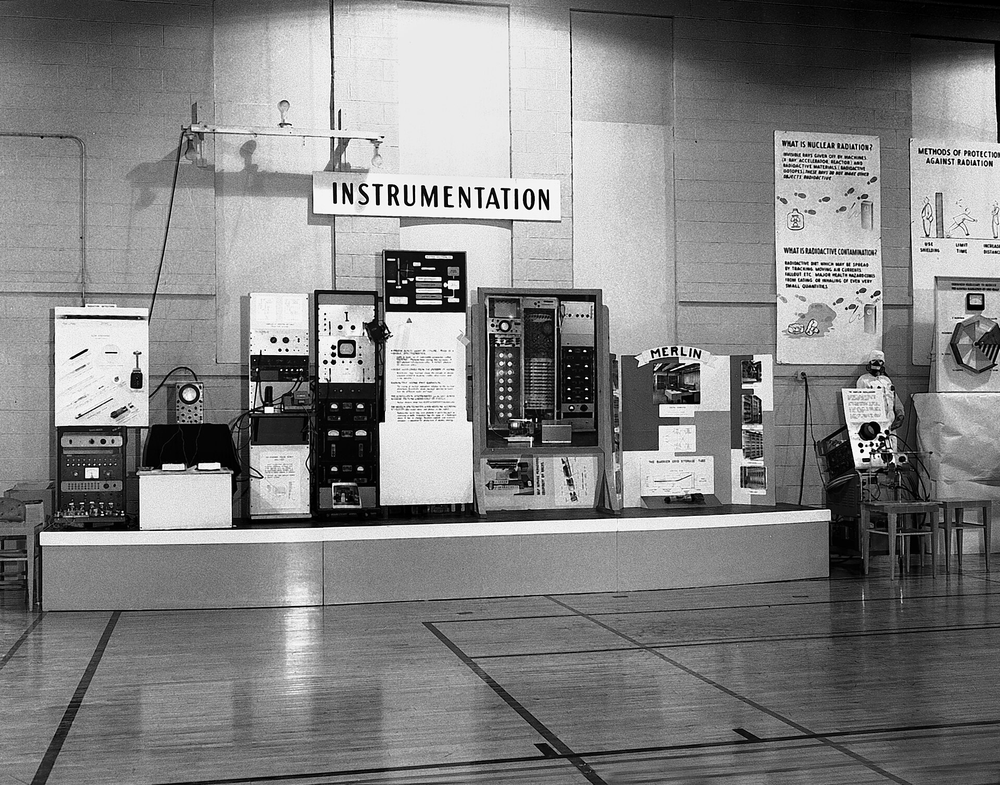
Tennis for TwoAnos 1970:
Atari lança o fliperama Pong (1972). O Atari 2600 populariza o uso de cartuchos trocáveis.
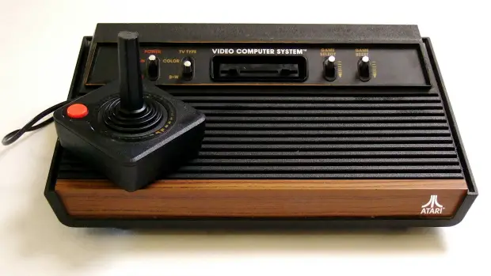
AtariAnos 1980:
A indústria é salva pela japonesa Nintendo com o lançamento do NES e de Super Mario Bros.
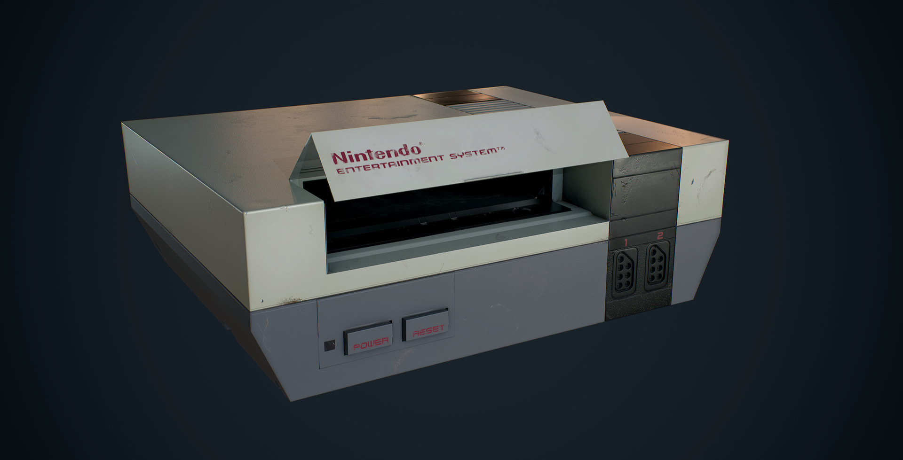
Super Mario BrosAnos 1990:
A década começa com a rivalidade feroz entre Super Nintendo e Sega Mega Drive.
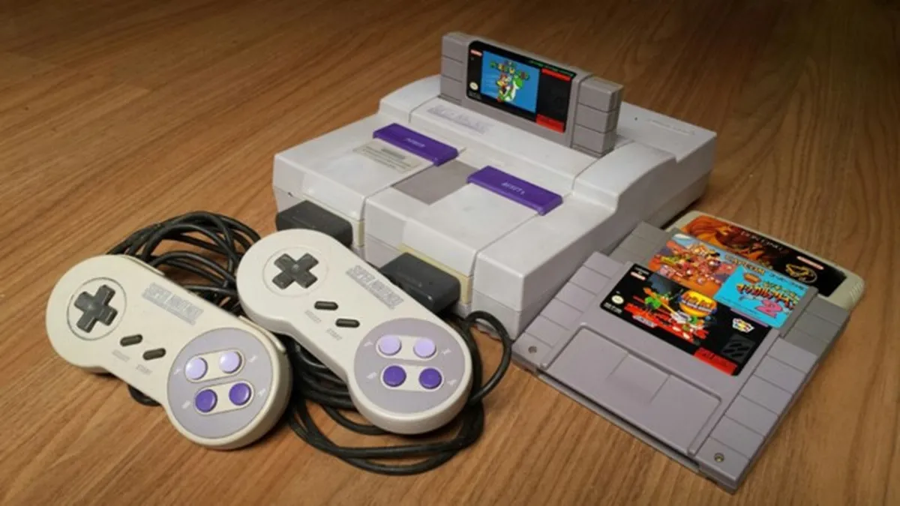
Super NintendoAnos 2000:
O PlayStation 2 se torna o console mais vendido da história. Houve um aumento expressivo da pirataria no mundo gamer.
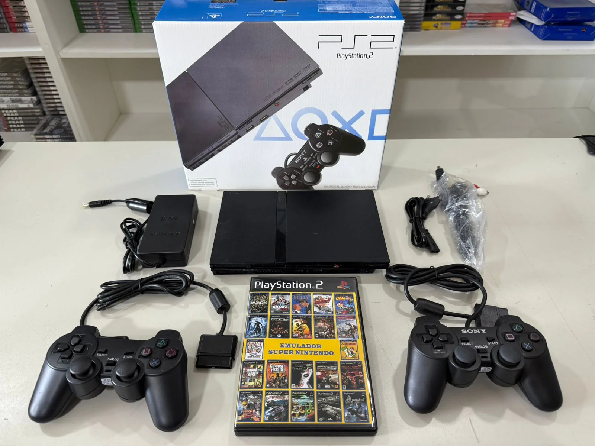
Playstation 2Anos 2010 até hoje:
O formato físico perde espaço para lojas digitais (como a Steam). Os jogos de smartphone se tornam um mercado bilionário.
Playstation 5A Era de Ouro das Locadoras e Lan Houses
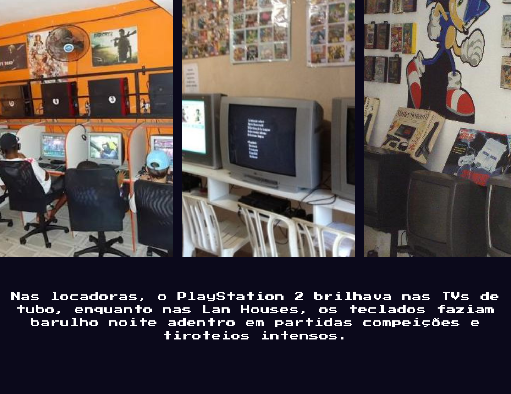
A Febre dos Navegadores e Redes Sociais
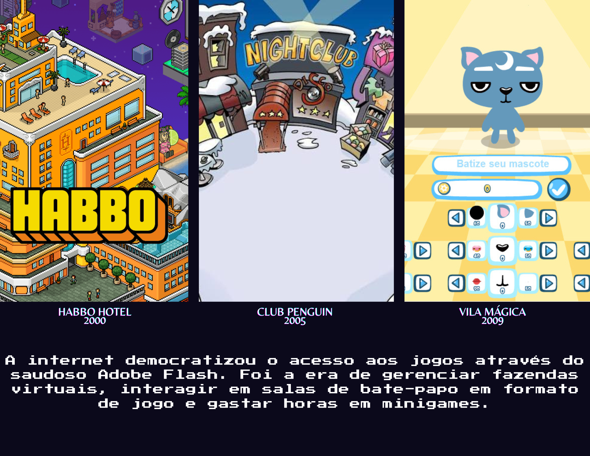
A Era dos Mundos Abertos, Narrativas e Sobrevivência
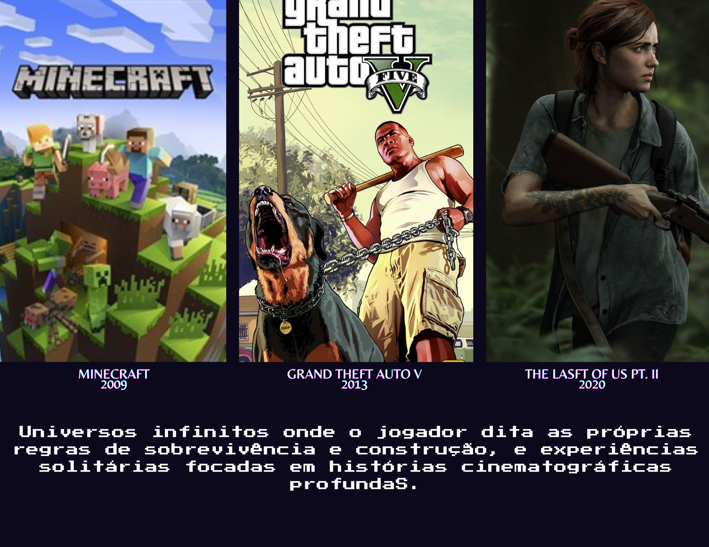
SEÇÃO CLÁSSICOS
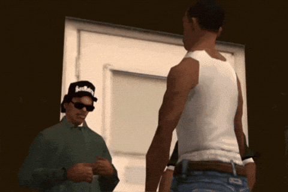
GTA San Andreas

PAC-MAN
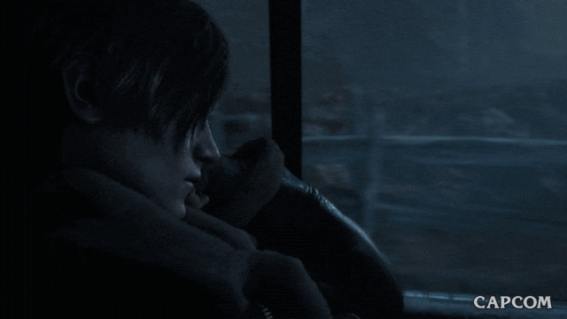
Resident Evil 4
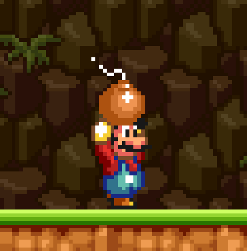